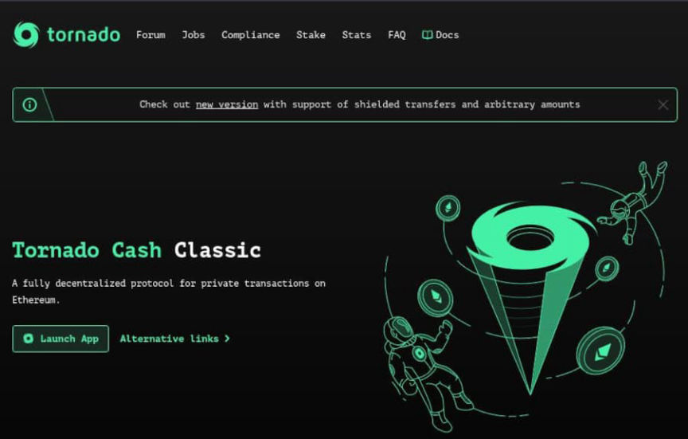
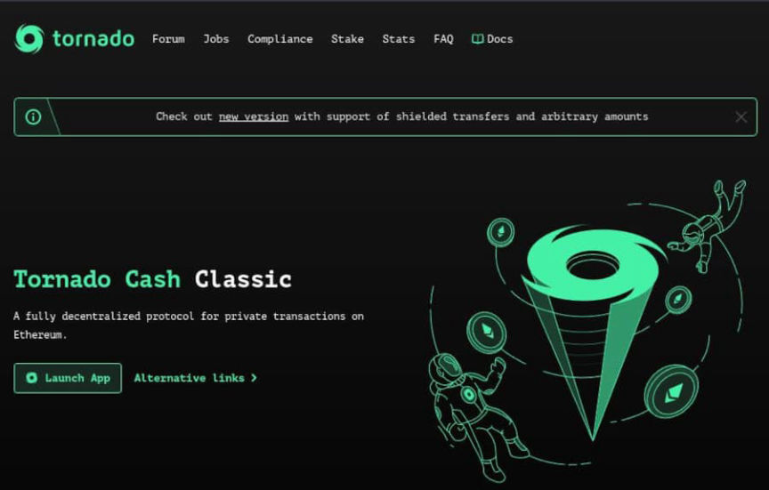

Netherlands Police Arrest Alleged Tornado Cash Dev
Law enforcement in the Netherlands arrested a suspected developer of the decentralized Ethereum mixing service Tornado Cash.
On August 8, 2022, the U.S. Department of the Treasury’s Office of Foreign Assets Control (OFAC) sanctioned the Tornado Cash Ethereum mixing service. Then, on August 10, 2022, the Fiscal Information and Investigation Service (FIOD) in the Netherlands arrested a 29-year-old man in Amsterdam.

According to the FIOD announcement from August 12, the 29-year-old is “suspected of involvement in concealing criminal financial flows and facilitating money laundering through the mixing of cryptocurrencies [through Tornado Cash].”
The Financial Advanced Cyber Team (FACT) of the FIOD launched an investigation into Tornado Cash in June 2022. FACT suspects that
“Tornado Cash has been used to conceal large-scale criminal money flows, including from (online) thefts of cryptocurrencies (so-called crypto hacks and scams). These included funds stolen through hacks by a group believed to be associated with North Korea. Tornado Cash started in 2019 and according to FACT it has since achieved a turnover of at least seven billion dollars. Investigations showed that at least one billion dollars’ worth of cryptocurrencies of criminal origin passed through the mixer. It is suspected that persons behind this organisation have made large-scale profits from these transactions.”
Additional arrests have not been ruled out, according to the announcement.
On August 12, the suspect appeared before the presiding judge.
Arrest of suspected developer of Tornado Cash | , archive.is, archive.org
Interesting precedent potentially.
On August 8, 2022, the U.S. Department of the Treasury’s Office of Foreign Assets Control (OFAC) sanctioned the Tornado Cash Ethereum mixing service. Then, on August 10, 2022, the Fiscal Information and Investigation Service (FIOD) in the Netherlands arrested a 29-year-old man in Amsterdam.

Tornado Cash
According to the FIOD announcement from August 12, the 29-year-old is “suspected of involvement in concealing criminal financial flows and facilitating money laundering through the mixing of cryptocurrencies [through Tornado Cash].”
The Financial Advanced Cyber Team (FACT) of the FIOD launched an investigation into Tornado Cash in June 2022. FACT suspects that
“Tornado Cash has been used to conceal large-scale criminal money flows, including from (online) thefts of cryptocurrencies (so-called crypto hacks and scams). These included funds stolen through hacks by a group believed to be associated with North Korea. Tornado Cash started in 2019 and according to FACT it has since achieved a turnover of at least seven billion dollars. Investigations showed that at least one billion dollars’ worth of cryptocurrencies of criminal origin passed through the mixer. It is suspected that persons behind this organisation have made large-scale profits from these transactions.”
Additional arrests have not been ruled out, according to the announcement.
On August 12, the suspect appeared before the presiding judge.
Arrest of suspected developer of Tornado Cash | , archive.is, archive.org
Interesting precedent potentially.